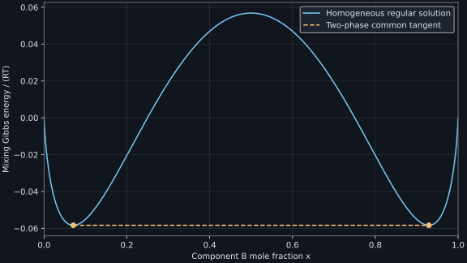

Numerical laboratory
Every chapter includes an executable program, actual displayed output and complete worked solutions. The programs test original stipulated models, conservation laws and mathematical derivations; the commercial course examples and proprietary databases are not reproduced.
Chapter programs
- code/ch01_microstructure.py — Microstructure, phases and composition
- code/ch02_order_and_bases.py — Chemical order, site populations and composition bases
- code/ch03_phase_diagrams.py — Reading unary and binary equilibrium diagrams
- code/ch04_ternary_balances.py — Ternary geometry, reaction paths and liquidus projections
- code/ch05_cooling_curves.py — Phase amounts, heat flow and the interpretation of cooling curves
- code/ch06_molecular_caloric.py — Thermodynamic states, molecular energy and heat capacity
- code/ch07_first_law_paths.py — The first law, reversible paths and adiabatic processes
- code/ch08_entropy_and_counts.py — Entropy, engines and statistical concentration
- code/ch09_potentials_entropy.py — Entropy contributions and thermodynamic potentials
- code/ch10_lattice_caloric.py — Lattice stability, caloric integration and microscopic mixing energies
- code/ch11_mixtures_activity.py — Mixing, chemical potentials, activities and transfer equilibrium
- code/ch12_global_tangents.py — Global tangents, transformation driving forces and the phase rule
- code/ch13_calphad_models.py — CALPHAD models, database consistency and constrained equilibrium
- code/ch14_equilibrium_workflow.py — Reproducible calculations: phase status, paths and result audits
- code/ch15_sections_references_tzero.py — Composition paths, property references and T-zero curves
- code/ch16_scheil_conservation.py — Scheil solidification, segregation and conservative histories
- code/ch17_data_constraints.py — Thermodynamic assessment: data, measurements and inverse constraints
- code/ch18_models_and_assessment.py — Sublattice models, assessment and compatible databases
- code/ch19_diffusion_mobility.py — Diffusion, mobility and thermodynamic forces
- code/ch20_conservative_transport.py — Conservative transport, interfaces and rapid solidification
- code/ch21_nucleation_aging.py — Nucleation, transformation diagrams and precipitation aging
- code/ch22_screening_characterization.py — High-throughput design, driving forces and phase identification
- code/ch23_material_properties.py — Material property models and strength
- code/ch24_size_electrochemistry_scope.py — Size, electrochemical reservoirs and database limits
Reproducible runtime
Install the pinned public requirements for the complete laboratory. Chapters 14, 15 and 22 execute actual pycalphad 0.11.1 calculations against their supplied synthetic TDB files; each chapter states the engine scope and limitations. Other examples use the Python standard library or the pinned numerical stack.
Regular-solution extension
The additional symmetric regular-solution model checks a supporting common tangent, phase-mole balances and spinodal endpoints. It is a teaching model rather than an assessed alloy database.
